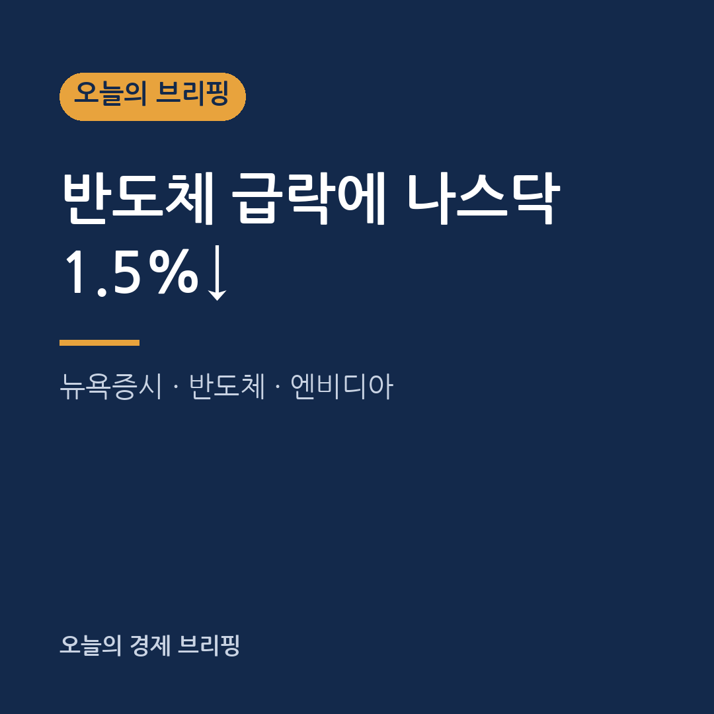
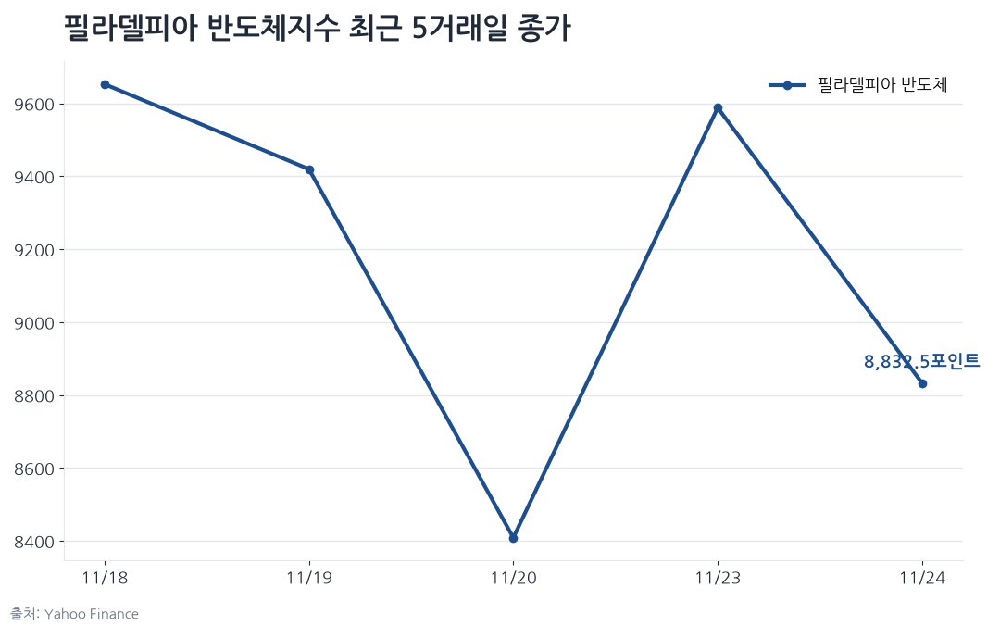

2026-11-25-0731-naver 발행 키트 · 이 페이지는 검색에 노출되지 않습니다.
제목
카테고리
오늘의 브리핑태그
본문 (그림·표 포함)
휴대폰 블로그 앱에서는 그림이 같이 붙지 않을 수 있어요. 그때는 [글자만 복사] 후 아래 이미지를 저장해 [그래프1]·[표1] 자리에 첨부하세요.

어제 아침 나스닥이 6% 넘게 뛴 걸 보고 "이제 좀 풀리나" 하셨던 분들 많으실 거예요. 그런데 간밤 미국 증시는 그 흐름을 상당 부분 되돌렸어요.
▶ 한 줄 총평 다우만 올랐고, 나스닥과 반도체는 크게 밀렸어요. 지수마다 방향이 갈린 혼조 마감이었어요.
▶ 간밤 성적표 24일(현지시간) 다우지수는 0.85% 올라 50,018.70으로 마감했어요. S&P500은 0.5% 내린 7,201.09, 나스닥은 1.48% 내린 23,733.54였어요.
11월 24일 미국 증시 마감
| 지수 | 종가 | 등락률 |
|---|---|---|
| 다우 | 50,018.70 | +0.85% |
| S&P500 | 7,201.09 | -0.50% |
| 나스닥 | 23,733.54 | -1.48% |
| 필라델피아 반도체 | 8,832.50 | -7.88% |
출처: Yahoo Finance
가장 크게 흔들린 건 필라델피아 반도체지수예요. 하루 만에 7.88% 내려 8,832.50이 됐어요.

그래프를 보면 20일에 바닥을 찍고 23일에 확 올랐다가 어제 다시 꺾인 모양이 한눈에 보이죠. 한경 보도에 따르면 전날 오른 폭의 64%를 하루 만에 내줬다고 해요.
▶ 왜 이렇게 빠졌을까요 첫째는 차익실현이에요. 하루 전 엔비디아가 31% 폭등했으니, 이익을 챙기려는 매물이 쏟아진 거죠. 엔비디아는 5.86% 내렸고, 마이크론은 11%대 하락했어요.
둘째는 정치 쪽 불확실성이에요. 엔비디아 경영진 복귀를 둘러싸고 미국 의회가 수출통제 문제를 들여다보겠다고 예고했고, 다음 달 3일 상원 청문회도 거론되고 있어요. 시장이 "복귀 호재"를 그대로 믿기엔 변수가 남은 셈이에요.
셋째는 관세예요. 미국 무역대표부(USTR)가 이르면 이번 주 과잉생산 관련 관세 조사 결과를 내놓을 거라는 보도가 나왔어요. 반도체처럼 공급망이 얽힌 업종은 이런 소식에 민감해요.
AI 대표 주자 앤트로픽도 눈길을 끌었어요. 상장 4거래일 만에 6.54% 떨어지면서 공모가 83달러 아래로 내려갔어요.
▶ 환율·금리·유가 원·달러 환율은 1,340.79원으로 전날보다 3.52원 내렸어요. 미 국채 10년물 금리는 4.90%로 거의 그대로였고, WTI 유가는 1.9% 올라 배럴당 81.69달러였어요.
▶ 오늘 우리 증시에서 볼 것 삼성전자·SK하이닉스 같은 반도체 대형주가 어제 올랐던 만큼, 오늘은 미국발 낙폭을 얼마나 따라가는지가 관건이에요. 환율이 1,340원대에서 안정적인지도 같이 확인해 보세요.
오늘 하루도 급락 뉴스에 휩쓸리지 말고 차분하게 지켜봐요. 여러분은 이번 반도체 되돌림, 어떻게 보셨나요? 댓글로 생각을 들려주세요.
출처 (본문 맨 아래에 붙여넣기 권장)
- 한국경제, 반도체지수 급반락 관련 기사, https://www.hankyung.com/article/2026112581587 - 한국경제, 엔비디아 급락 속보, https://www.hankyung.com/article/2026112581417 - 한국경제, 앤트로픽 공모가 하회 속보, https://www.hankyung.com/article/2026112581447 - 연합뉴스, 뉴욕증시 마감 종합, https://www.yna.co.kr/view/AKR20261125011251072 - 시세: Yahoo Finance (finance.yahoo.com)